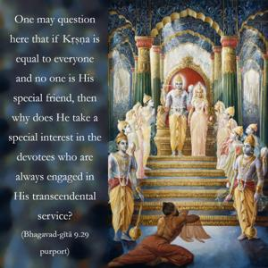
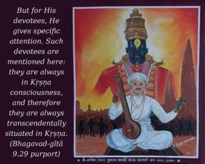

I envy no one, nor am I partial to anyone. I am equal to all. But whoever renders service unto Me in devotion is a friend, is in Me, and I am also a friend to him.


One may question here that if Kṛṣṇa is equal to everyone and no one is His special friend, then why does He take a special interest in the devotees who are always engaged in His transcendental service? But this is not discrimination; it is natural. Any man in this material world may be very charitably disposed, yet he has a special interest in his own children. The Lord claims that every living entity – in whatever form – is His son, and so He provides everyone with a generous supply of the necessities of life. He is just like a cloud which pours rain all over, regardless of whether it falls on rock or land or water. But for His devotees, He gives specific attention. Such devotees are mentioned here: they are always in Kṛṣṇa consciousness, and therefore they are always transcendentally situated in Kṛṣṇa. The very phrase “Kṛṣṇa consciousness” suggests that those who are in such consciousness are living transcendentalists, situated in Him. The Lord says here distinctly, mayi te: “They are in Me.” Naturally, as a result, the Lord is also in them. This is reciprocal. This also explains the words ye yathā māṁ prapadyante tāṁs tathaiva bhajāmy aham: “Whoever surrenders unto Me, proportionately I take care of him.” This transcendental reciprocation exists because both the Lord and the devotee are conscious. When a diamond is set in a golden ring, it looks very nice. The gold is glorified, and at the same time the diamond is glorified. The Lord and the living entity eternally glitter, and when a living entity becomes inclined to the service of the Supreme Lord he looks like gold. The Lord is a diamond, and so this combination is very nice. Living entities in a pure state are called devotees. The Supreme Lord becomes the devotee of His devotees. If a reciprocal relationship is not present between the devotee and the Lord, then there is no personalist philosophy. In the impersonal philosophy there is no reciprocation between the Supreme and the living entity, but in the personalist philosophy there is.
The example is often given that the Lord is like a desire tree, and whatever one wants from this desire tree, the Lord supplies. But here the explanation is more complete. The Lord is here stated to be partial to the devotees. This is the manifestation of the Lord’s special mercy to the devotees. The Lord’s reciprocation should not be considered to be under the law of karma. It belongs to the transcendental situation in which the Lord and His devotees function. Devotional service to the Lord is not an activity of this material world; it is part of the spiritual world, where eternity, bliss and knowledge predominate.